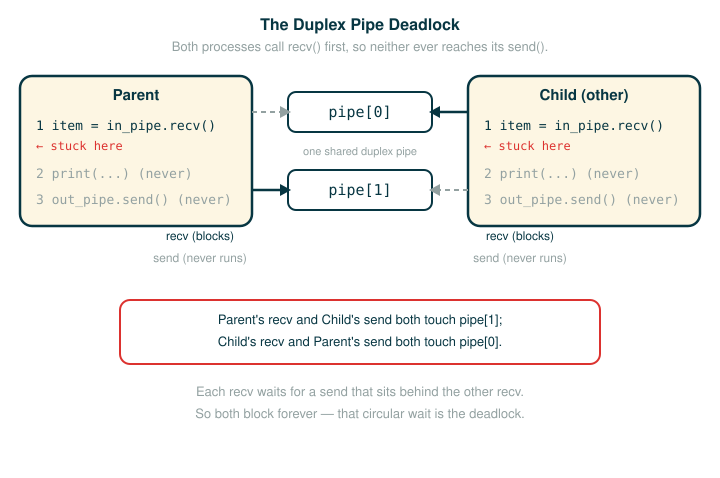

4.8.8 Synchronization Pitfalls
You already have the tools for parallel programs: locks, barriers, synchronized queues, and pipes. This lesson is about using them wrong. Synchronization methods protect shared state, but they can also be used incorrectly. By the end you will be able to name and recognize three failure modes, walk through the official duplex-pipe deadlock line by line, explain exactly why both processes freeze, and state the concrete rules that keep a parallel program from getting stuck.
The single idea underneath all of this is that synchronization is not free safety you can pour on. Too little of it leaves races. Too much of it destroys parallelism or freezes the program. The skill is choosing the right boundary, and the rest of this lesson is about what goes wrong on either side of that boundary.
A Real-World Picture of the Three Failures
Imagine a shared office kitchen with one coffee machine and a sign-up sheet.
Too little coordination is when two people both read "machine is free," both walk over at the same time, and collide at the machine. Nobody agreed on who goes first, so the shared resource gets used by two people at once. That is the racing problem you saw with the shared counter.
Too much coordination is when you decide that, to be perfectly safe, one person locks the entire kitchen the moment they walk in and unlocks it only when they leave the building for the day. Now nobody collides, but nobody else can get coffee either. The kitchen is safe and useless. Worse, suppose the rule is that the coffee drinker holds the only key, and the person who refills the beans needs that same key to get in. The drinker waits for fresh beans, the refiller waits for the key, and the kitchen sits idle forever.
A circular wait is the deepest failure. Two people each politely insist the other go first: "after you," "no, after you." Each is waiting for the other, so neither ever moves. This is not slow. It is permanently stuck, because the action that would free each person is exactly the action the other is waiting to see.
These three pictures map directly onto the three pitfalls below: under-synchronization, over-synchronization, and deadlock.
⚠The Three Pitfalls at a Glance
Synchronization methods are effective for protecting shared state, but they can be used incorrectly in three ways: failing to accomplish the proper synchronization, over-synchronizing, or causing the program to hang as a result of deadlock.
Under-synchronization
not enough coordination, so conflicting accesses can still interleave
Over-synchronization
too much coordination, so non-conflicting operations cannot run concurrently
(and in the worst case the program hangs)
Deadlock
a circular wait, where each task is stuck waiting for anotherThe hard part of parallel programming is choosing exactly what must be coordinated, and these are the three ways that choice goes wrong.
Under-Synchronization
A common pitfall in parallel computing is to neglect to properly synchronize shared accesses. Under-synchronization means a program leaves a shared-state operation unprotected, so two tasks can interleave in a way that corrupts the result.
The trap is subtler than "I forgot a lock entirely." Consider the shared set from the web-crawler lock example, where a worker checks whether a URL has been seen and, if not, adds it. We need to synchronize the membership check and the insertion together, so that another thread cannot perform an insertion in between these two operations. The two steps look like this:
check whether url is in the set
if it is not, insert url into the setSuppose you synchronize each step on its own: the check is protected, and the insertion is protected, but they are separate critical sections. Two threads can now both run the protected check, both see "not present," and both run the protected insertion. Failing to synchronize the two operations together is erroneous, even if they are separately synchronized. The conflicting window is the gap between them, and locking the pieces individually does not close that gap.
Here is a warm-up that makes the "two operations that must be one unit" shape concrete. This is a simpler stand-in of my own, not the official text; it shows the pair of steps that have to be atomic together.
# (1)
def see_if_new(seen, url):
is_new = url not in seen # step 1: membership check
if is_new:
seen.add(url) # step 2: insertion
return is_new
If two threads run see_if_new at the same time and the schedule slips a switch between step 1 and step 2, both can decide url is new and both can add it. The fix is to make the check-and-insert pair a single critical section, not two. The general rule under-synchronization teaches is this: synchronize the whole operation that must be indivisible, not just the individual statements inside it.
Over-Synchronization
Another common error is to over-synchronize a program, so that non-conflicting operations cannot occur concurrently. This is the opposite mistake. The program is safe from races, but it has been made slow or even unable to run.
As a trivial example, we can avoid all conflicting access to shared data by acquiring a master lock when a thread starts and only releasing it when a thread completes. This serializes our entire code, so that nothing runs in parallel. Every thread takes the one lock at the top, holds it for its whole life, and hands it on only at the end. The collisions are gone, but so is every benefit of running threads at all.
In some cases, over-synchronization can even cause the program to hang indefinitely. For example, consider a consumer/producer program in which the consumer obtains the lock and never releases it. This prevents the producer from producing any items, which in turn prevents the consumer from doing anything since it has nothing to consume. The consumer is holding a lock while waiting for work that can only arrive if it lets go. Nothing in the program can move it forward.
While this example is trivial, in practice programmers often over-synchronize their code to some degree, preventing their code from taking complete advantage of the available parallelism. The damage is usually not a full freeze but a quiet one: threads spend their time waiting on a lock that covers more than it needed to, and the program runs as if it were single-threaded.
The lesson is that the goal is never "use more synchronization." The goal is to make the lock-protected region exactly as large as the conflict and no larger.
Deadlock
Because they cause threads or processes to wait on each other, synchronization mechanisms are vulnerable to deadlock, a situation in which two or more threads or processes are stuck, waiting for each other to finish. Deadlock is the most serious pitfall, because the program is not slow; it has no possible next step at all.
You have already seen one route into it. In the over-synchronization example, neglecting to release a lock caused a thread to get stuck indefinitely. But even if threads or processes do properly release locks, programs can still reach deadlock.
The source of deadlock is a circular wait. No process can continue because it is waiting for other processes that are waiting for it to complete. Arrange the waiting relationships in a ring and the trap becomes visible:
Process A is waiting for Process B
Process B is waiting for Process C
Process C is waiting for Process AEvery process in the ring is blocked, and the action that would unblock any one of them is being withheld by the next process around the ring, which is itself blocked. There is no first mover, so the ring never breaks. This is the same "after you, no after you" standoff from the kitchen, drawn as a cycle of tasks instead of two people.
Deadlock does not require locks. A circular wait can form out of pure message passing, which is exactly what the official example shows next.
The Official Duplex Pipe Deadlock
The official source sets up a deadlock with two processes that share a duplex pipe and attempt to communicate with each other. A duplex pipe carries messages in both directions, and each process holds one end. Recall from the message-passing lesson that recv blocks: it does not return until an item is available on that end of the pipe.
The dangerous shape is that both sides try to receive before either side sends:
Process A waits to receive from B
Process B waits to receive from AIf both processes call recv first, no process has put a value into the pipe, so no recv can return. That is the message-passing version of the circular wait: there is no shared lock anywhere, but there is still a cycle of waiting with no first mover.

Before the official version, here is a stripped-down bridge of my own that shows the bug with the smallest possible body. It is not from the source; it just isolates the receive-before-send mistake so the official example reads cleanly.
# (2)
def wait_first(in_pipe, out_pipe):
item = in_pipe.recv() # blocks here until someone sends
out_pipe.send(item)
If two processes each run wait_first on opposite ends of one pipe, both stop on the recv line and neither ever reaches its send. Each is waiting for the message the other has not been allowed to send yet.
Now the official example, exactly as it appears in the source:
# (3)
def deadlock(in_pipe, out_pipe):
item = in_pipe.recv()
print('got an item:', item)
out_pipe.send(item + 1)
def create_deadlock():
pipe = multiprocessing.Pipe()
other = multiprocessing.Process(target=deadlock, args=(pipe[0], pipe[1]))
other.start()
deadlock(pipe[1], pipe[0])
create_deadlock()
Both processes attempt to receive data first. Recall that the recv method blocks until an item is available. Since neither process has sent anything, both will wait indefinitely for the other to send it data, resulting in deadlock.
Reading the Setup Line by Line
The line that wires the trap together is the one inside create_deadlock that launches the second process. Walk it one token at a time:
other = multiprocessing.Process(target=deadlock, args=(pipe[0], pipe[1]))
├─ other ................... the name bound to the new process object
├─ = ....................... assignment
├─ multiprocessing.Process . the constructor that makes a new process
├─ ( ....................... begins the arguments
├─ target=deadlock ......... the function the new process will run
├─ , ....................... separates the arguments
├─ args=(pipe[0], pipe[1]) . the two pipe ends passed to deadlock, in this order
├─ ) ....................... ends the arguments
└─ creates ................. a process that will call deadlock(pipe[0], pipe[1])The other half of the wiring is the main process calling deadlock itself, on the same two ends but swapped:
deadlock(pipe[1], pipe[0])
├─ deadlock ... the same function the child process is running
├─ ( .......... begins the arguments
├─ pipe[1] .... this process reads from end 1 ...
├─ , .......... separates the arguments
├─ pipe[0] .... ... and writes to end 0
├─ ) .......... ends the arguments
└─ runs ....... deadlock in the main process, mirroring the childSo the child reads from pipe[0] and writes to pipe[1], while the parent reads from pipe[1] and writes to pipe[0]. Each process is supposed to receive on the end the other writes to. That would be fine if anyone sent first, but the first thing each deadlock body does is recv.
Tracing the Freeze Step by Step
Follow the two processes through the body of deadlock. The body has three statements: receive, print, then send. Both processes are at line 1.
1. Parent calls deadlock(pipe[1], pipe[0]); child runs deadlock(pipe[0], pipe[1]).
2. Parent executes item = in_pipe.recv() on pipe[1]. Nothing has been sent there, so it blocks.
3. Child executes item = in_pipe.recv() on pipe[0]. Nothing has been sent there either, so it blocks.
4. Parent's send (out_pipe.send) is on the line AFTER its recv, so it never runs.
5. Child's send is likewise after its recv, so it never runs.
6. Each process is blocked on recv, waiting for a send that only the other could make,
and that send sits behind the recv that is already blocked. The wait is a cycle.Neither recv can return, so neither process reaches its send, so neither recv will ever have a value to return. This is not a slow program waiting on something that will eventually arrive. It is a program with no next step inside the cycle. The print('got an item:', ...) line never executes for either process.
Why Deadlock Is Hard
Deadlock is dangerous partly because it often appears only under a particular timing pattern. A program may pass every small test and then freeze under real load, because the interleaving that closes the cycle only happens when tasks line up a certain way.
The machine model of a deadlock has four parts:
1. A task holds a resource, or is blocked waiting for a message.
2. Another task holds the resource the first one needs, or is blocked the same way.
3. The wait relationships form a cycle, with no task outside it that can intervene.
4. No task in the cycle can take the action that would release the next, because
that action sits behind the wait it is already stuck on.The duplex-pipe example is exactly this with messages instead of locks. Each process is blocked on recv, the release action is a send, and every send sits behind a blocked recv. There is no participant left to break the ring.
⚠Avoiding the Pitfalls
Synchronization operations must be properly aligned to avoid deadlock. The official rules are concrete:
Send over a pipe before receiving, so some process produces the first message.
Acquire multiple locks in the same order in every thread, so no two threads can hold
each other's next lock.
Ensure that all threads reach the right barrier at the right time, so no thread waits
at a barrier the others will never reach.These line up with the broader habits the rest of the chapter teaches: keep lock-protected sections exactly as small as the conflict (the over-synchronization fix), synchronize an operation that must be indivisible as a single unit rather than statement by statement (the under-synchronization fix), and design message protocols with a clear first sender so no cycle of receivers can form (the deadlock fix).
The summary across all three pitfalls is the same one sentence: the goal is not "use more synchronization," it is "use the right synchronization boundary."
▶Step-Through Checkpoint
The real deadlock cannot be shown by stepping, because a frozen process never advances. Instead, the block below is a deterministic model of the same idea: it builds a wait graph as a dictionary, then follows the "waits for" links and detects when the path loops back on itself, which is exactly the circular wait at the heart of deadlock. It is self-contained and runnable. Stepping through it draws the environment diagram of the circular wait. The global frame holds waits_for, which points at one shared dictionary on the heap. The single follow frame keeps reading from that dictionary: each step sets current to whoever the current process is waiting for, and appends that name to its path list — until current lands on a name already in path, which is the moment the ring closes. Before you step through it, write down your prediction for the final path the function returns, and which repeated name marks the cycle.
# (4)
waits_for = {
"Process A": "Process B",
"Process B": "Process C",
"Process C": "Process A",
}
def follow(start, steps):
path = []
current = start
for _ in range(steps):
path.append(current)
current = waits_for[current]
if current in path:
path.append(current)
return path
return path
cycle = follow("Process A", 10)
print(cycle)
Step through it and check your prediction as path grows: ["Process A"], then ["Process A", "Process B"], then ["Process A", "Process B", "Process C"]. On the next step current becomes "Process A" again, which is already in path, so the function appends it once more and returns. The repeated "Process A" at the end is the visible signature of a cycle: the chain of waiting returns to where it began, and no participant is ever free to move.
⚠Common Beginner Traps
- Thinking more locks always means more safety. More locks create more ways to wait incorrectly, and a master lock held for a whole thread serializes the program or hangs it.
- Synchronizing the individual statements but not the operation. Protecting a membership check and an insertion separately still leaves the gap between them open: two threads both pass the check and both insert the same URL, so it is added twice and the set is corrupted. They must be one critical section.
- Thinking deadlock requires locks. A duplex pipe with both sides calling
recvfirst deadlocks with no lock anywhere. - Holding a lock or other resource while waiting for something that can only arrive after you release it. That is the consumer-who-never-releases hang, and it is a classic deadlock ingredient.
- Thinking a program is fine because it worked once. Timing-dependent freezes may only appear under heavier load or a particular interleaving.
✓Check Your Understanding
- What is under-synchronization, and why is protecting the membership check and the insertion separately still wrong?
- What is over-synchronization? Give the trivial example that serializes an entire program, and explain how over-synchronization can make a consumer/producer program hang.
- What is a circular wait, and why does it mean the program is stuck rather than merely slow?
- Suppose two processes share one duplex pipe and each runs a body that sends first and then receives,
out_pipe.send(0)followed byitem = in_pipe.recv(), on opposite ends. Does this deadlock the way the officialdeadlockexample does, and why or why not? - State three concrete rules for aligning synchronization operations so a program avoids deadlock.
Show the answers
- Under-synchronization is failing to properly synchronize a shared access, so conflicting operations can still interleave. Protecting the check and the insertion separately leaves the window between them unguarded: two threads can both pass the protected check, both see "not present," and both run the protected insertion. The check and insertion must be synchronized together as one indivisible operation.
- Over-synchronization is adding so much coordination that non-conflicting operations cannot run concurrently. The trivial example acquires a master lock when a thread starts and releases it only when the thread completes, which serializes the entire program so nothing runs in parallel. It can hang a consumer/producer program when the consumer obtains the lock and never releases it: the producer cannot produce, so the consumer has nothing to consume, and nothing can move forward.
- A circular wait is a situation where each task in a ring is waiting for the next task, which is itself waiting, all the way around the ring. It is stuck rather than slow because the action that would release any task is being withheld by another task that is itself blocked, so there is no first mover and no possible next step inside the cycle.
- No, it does not deadlock. Because each process calls
sendbeforerecv, each pipe end already holds a value by the time either process reaches itsrecv, so bothrecvcalls find an item waiting and return. The official example freezes precisely becauserecvcomes first with nothing sent; moving thesendahead of therecvgives the program a first sender, which is exactly the "send before receiving" rule that breaks the cycle. - Send over a pipe before receiving so some process produces the first message; acquire multiple locks in the same order in every thread; and ensure that all threads reach the right barrier at the right time.
§Summary
Synchronization is a design tool, not a coating of safety you add for its own sake. It fails in three directions. Under-synchronization leaves conflicting accesses unguarded, and the subtle form is synchronizing individual statements while leaving the operation that must be indivisible, such as a check followed by an insertion, split across separate critical sections. Over-synchronization coordinates too much, so non-conflicting work cannot run concurrently; in its trivial form a master lock held for a whole thread serializes everything, and in its worst form a consumer that never releases its lock hangs the program. Deadlock is a circular wait in which two or more tasks are stuck waiting for each other, shown by the duplex pipe where both processes call recv first and neither ever sends. The cure is alignment, not volume: send before receiving, acquire multiple locks in the same order, and make sure every thread reaches the right barrier at the right time. The aim is always the right synchronization boundary, not more of it.